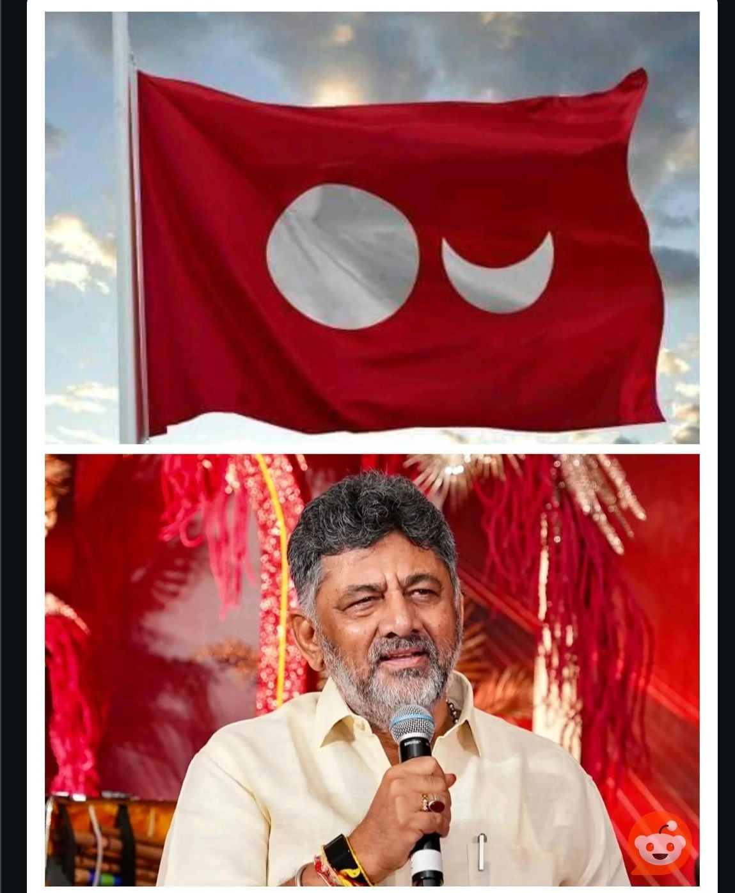

MANGALURU — The announcement has finally arrived.
On September 18, 2026, during a historic Cabinet session in Mangaluru, the Karnataka Cabinet approved Tulu as the state's second additional official language for administrative purposes in Dakshina Kannada and Udupi districts. The government also sanctioned an annual allocation of ₹82 lakh for translation, civil service training, and operational capacity building connected with the administrative usage of Tulu.
For a Dravidian language with over two millennia of heritage that has spent decades seeking formal administrative recognition, this marks a significant policy decision.
However, as public celebrations continue across the Karavali region, one vital document remains missing from public view: The Action Taken Report (ATR) on the Gayatri Committee findings.
And alongside that missing paper trail comes an even larger question: What is Karnataka's concrete language-planning framework to make Tulu functional inside the state machinery?
The Cabinet's decision resolves the long-standing question of status: Tulu is now an additional official administrative language in Dakshina Kannada and Udupi. That is now a recorded government decision, not merely a campaign objective.
Yet, an official-language declaration is merely the beginning of an administrative process. A language becomes usable in governance only through standardized rules, domain-specific terminology, trained civil servants, translation protocols, statutory forms, digital infrastructure, and clear monitoring mechanisms.
Recognition tells citizens what the Government has decided. Language planning establishes how that decision will function in daily public life.
The necessity of the Gayatri Committee’s Action Taken Report (ATR) did not disappear with the Cabinet announcement.
The Gayatri Committee report—submitted to the state government earlier this year—serves as the primary evidentiary foundation for this policy shift. Right to Information (RTI) proceedings tracked by Taulava Gēl Inaya Koolya (TGIK) show that during a First Appeal hearing on September 10, officials indicated that administrative compilation was in its final stages and the ATR would be handled post-Cabinet.
With the Cabinet decision now announced, publishing the ATR becomes essential to establish the administrative chain:
Without the ATR, the public cannot distinguish between:
An annual allocation of ₹82 lakh provides an initial foundation, but converting policy into daily governance requires a structured strategy across five operational domains:
The state government must clearly codify the administrative domains in which Tulu can be used. Citizens require explicit clarity on whether Tulu applies to municipal notices, revenue representations, public counters, village panchayat circulars, and departmental correspondence across Dakshina Kannada and Udupi.
Bureaucracy relies on technical precision. Developing a modern administrative language requires standardized glossaries across legal, revenue, healthcare, and municipal sectors, as well as official terminology databases, spelling conventions, and translation guidelines.
Personnel must be equipped to handle administrative Tulu. The ₹82 lakh fund must be deployed toward training programs for existing government staff, creating certified cadres for translators, and building partnerships with regional academic institutions.
Under Article 345 of the Indian Constitution, states hold the authority to adopt languages for official purposes. The Karnataka Government must now issue clear guidelines regarding whether recruitment or departmental exams will offer Tulu options and establish evaluator qualifications.
In 2026, administrative utility depends on digital integration. Portals, citizen-service platforms, and e-district applications must support standardized Tulu text encoding alongside accessible digital forms.
The Cabinet decision specifies a defined geographical scope: Dakshina Kannada and Udupi districts.
This geographical boundary allows implementation to be specific and measurable. While the broader cultural concept of Tulunadu encompasses historical regions across state lines (including Kasaragod), state language policy operates strictly within administrative boundaries:
The campaign for Tulu officialization has achieved its initial policy goal. The responsibility now shifts to administrative oversight.
"The campaign demand was: 'Recognise Tulu.' The policy demand must now be: 'Show us the system.'" — Tuluva Guardian Desk
To ensure this milestone translates into working governance, the state government must release the Action Taken Report (ATR) and present a clear, time-bound language planning roadmap.